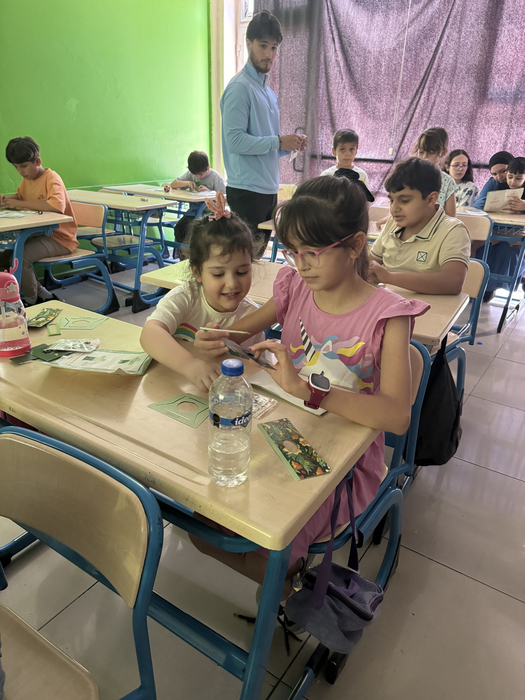

Education · Jarabulus, Syria
Community Education Center
Helping fund a center for returning families, after-school learning, and teacher development.
View projectWe support refugees and underserved communities through learning, essential healthcare, and partnerships that build lasting independence.

After nearly a decade in Turkey, a community education center is relocating to Jarabulus. We are partnering with its operating organization to help fund the opening.
Explore our projects ↗Helping fund a center for returning families, after-school learning, and teacher development.
View projectOur foundation grew from medical and humanitarian work with refugees across three countries. We focus on the education, health, and community resources that help people build more secure and independent lives.
Read our story ↗